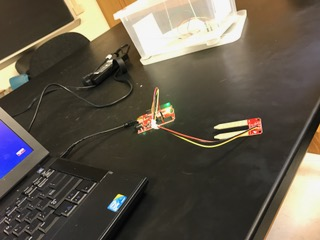
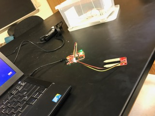

Programing Sensors with Python
Workshop for students of SCCC
Fall 2016, Fall 2019
Organizers: Glenda Denicolo (SCCC) and Michael Zingale (SBU) This event was sponsored by: Office of Campus Activities and Student Leadership Development, and Department of Physical Sciences.
Arduinos and sensors are often programmed with C++ or with Arduino sketches, which can be clunky and not easy to play with, specially if you want to make plots and understand what the sensors are measuring. Python is known as an accessible language that has many packages for scientific visualization. This workshop fulfills many purposes: introducing students to Python, programming unexpensive sensors, and (at least as a goal for future installments of this workshop) exploring science (plots and statistics) with these programmed sensors.
- Flyer (2016)
- Registration form (google form, closed at max number of students: 18)
- The Power of Python: introductory talk by Prof. Zingale, Sept 28 2016.
INSTALLATION REQUIREMENTS if using personal computer:
- Arduino IDE: https://www.arduino.cc/en/Main/Software
- Anaconda (inlcudes Python 3.7, Jupyter notebook): https://www.anaconda.com/distribution/
- in a terminal window do: pip install pyfirmata
- For Windows, further installation is required (see a more detailed installation section below).
| Day 1 |
|
 matplotlib-streaming.ipynb oneLED.ipynb twoLEDs.ipynb LEDsLightSensor.ipynb |
| Day 2 |
|
LEDsLightSensor_matplotlib.ipynb |
| Day 3 |
|
sound_matplotlib_Fall2019.ipynb soil_moisture_matplotlib_Fall2019.ipynb Temperature_matplotlib_Fall2019.ipynb pulse_matplotlib_Fall2019.ipynb |
Fall 2019
Fall 2016

 



Relevant links:
Where can I learn more Python?
https://www.codecademy.com/learn/python
Where were the electronic materials used in the worshop purchased (arduino, circuit components, etc)?
What is a circuit?
https://learn.sparkfun.com/tutorials/what-is-a-circuit
What is an Arduino?
https://www.arduino.cc/en/Guide/Introduction
https://learn.sparkfun.com/tutorials/what-is-an-arduino
Installing the Arduino software (Windows, Mac, Linux):
https://learn.sparkfun.com/tutorials/installing-arduino-ide
Arduino software built-in examples:
https://www.arduino.cc/en/Tutorial/BuiltInExamples
Arduino comparison guide:
https://learn.sparkfun.com/tutorials/arduino-comparison-guide
Many projects that use Arduino:
http://www.instructables.com/tag/type-id/category-technology/channel-arduino/
Software installation steps for this workshop:
For Windows (it is very similar for other operating systems, search online)
Python installation
Download the Anaconda package with Python 3.7 for Windows 64-bit: (if your computer has the 32-bit Windows version, then install 32-bit. Google how to find that out.)
https://www.anaconda.com/distribution/
Go to start menu and type cmd. A new window (command terminal) will open. On the command prompt terminal, type:
conda install -c anaconda setuptools
Close and reopen the command prompt for the changes to take effect.
In the command prompt terminal, type:
easy_install.exe pip
pip install ipython[all]
pip install pyserial
pip install pyfirmata
In Windows, you will also need to install something called "FTDI drivers". Here are the instructions:
https://learn.sparkfun.com/tutorials/how-to-install-ftdi-drivers/all
I had to do all steps described in the link above to fully install those drivers. You need it so that the sparkfun Arduino board we are using (the RedBoard) can be recognized by your computer via USB connection.
Arduino software installation & preparation to "interpret" Python
Download Arduino from:
http://arduino.cc/en/Main/Software
Unzip the downloaded file and click where necessary to complete the installation.
Connect Arduino board to computer via USB cable.
Open the Arduino editor, click on the "Tools" menu, and navigate to "Board". Select Arduino Uno (it works for the RedBoard we are using). Back again in the "Tools" menu, go to "Serial Port". Select the appropriate COM port that indicates the drive where the Arduino board is connected.
On the menu of the Arduino editor, go to "File" → "Examples" → "Firmata" → "StandardFirmata". Compile and upload StandardFirmata.
Back on a command prompt terminal (not the Arduino editor anymore), type:
jupyter notebook
A python notebook should open in your browser. In the notebook, click "New", then "Python 2". Type in the notebook:
import pyfirmata
...(here goes the rest of a code in Python language)
Disclaimer: Any opinions, findings, conclusions or recomendations expressed in this website are those of the author and do not necessarily reflect the views of Suffolk County Community College.
Icons made by Freepik from www.flaticon.com are licensed by CC 3.0 BY; other icons are by fontawesome.com.
Html template by pixelarity.com